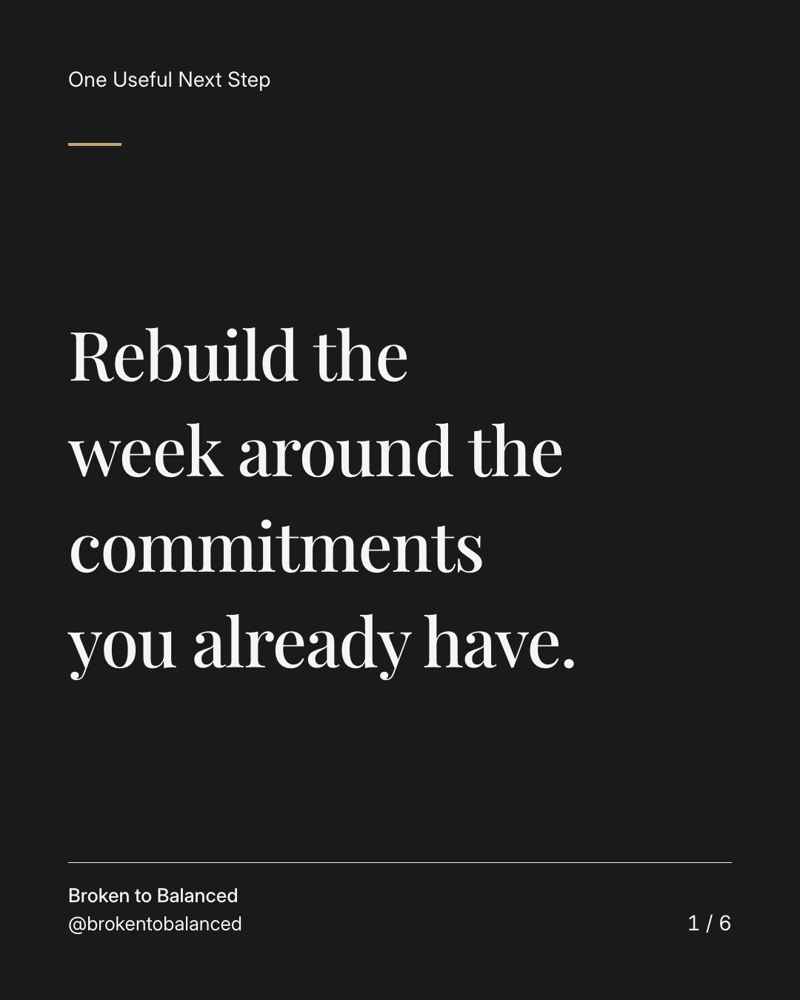
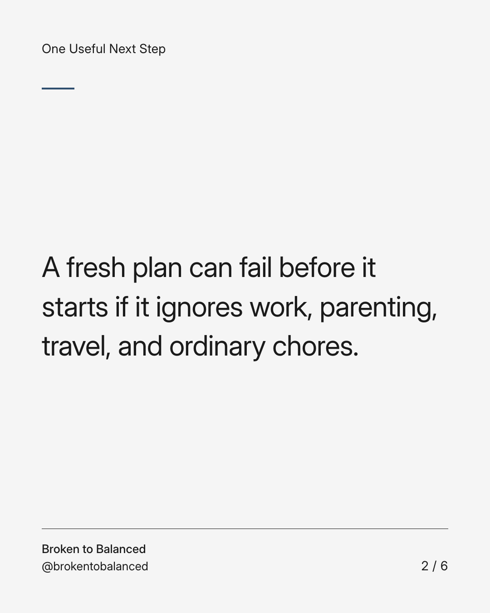
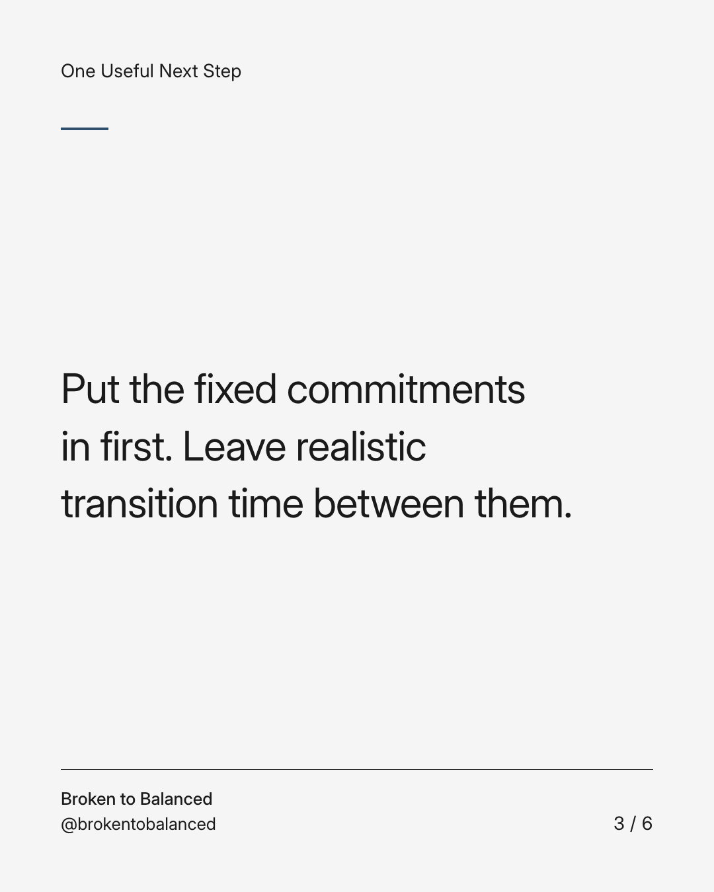
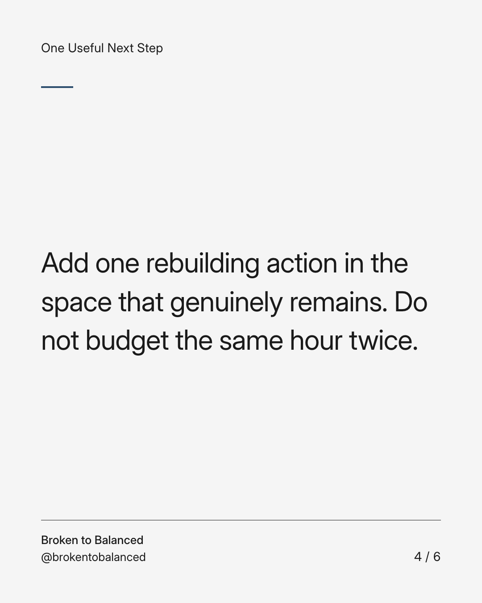
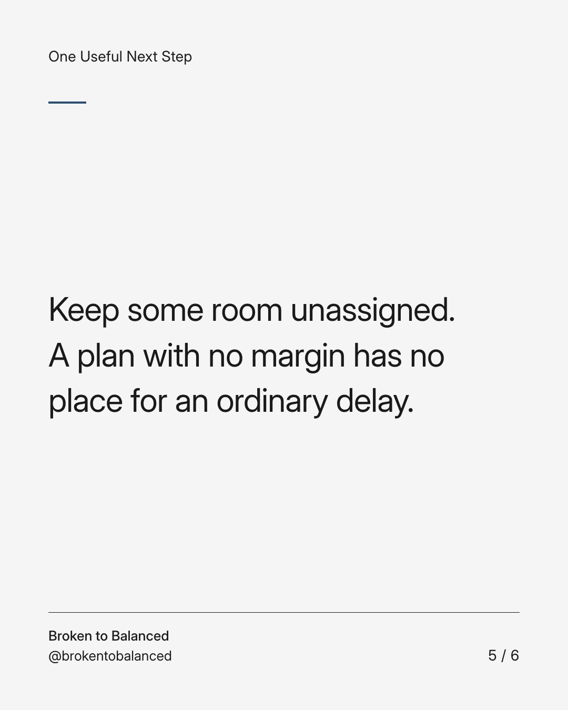
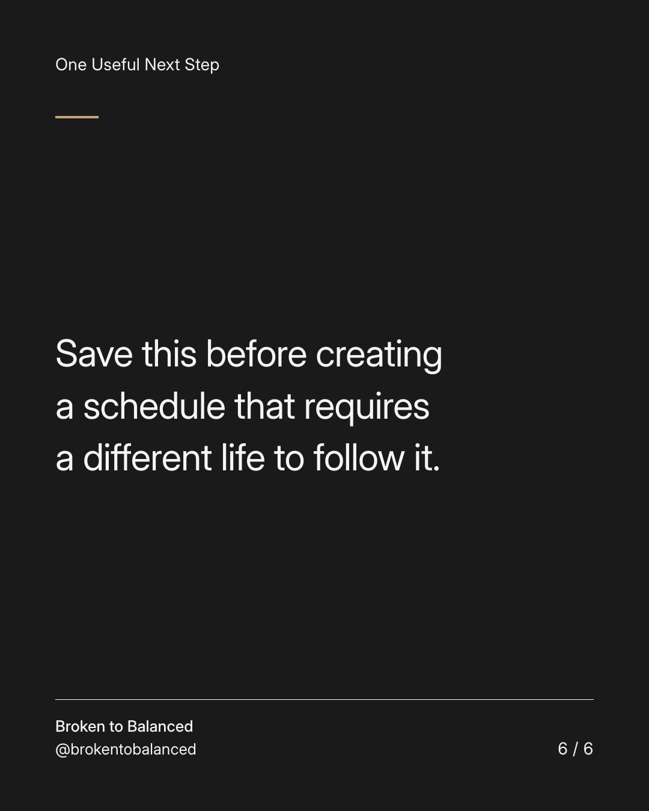

Exact text and accessibility text
Rebuild the week around the commitments you already have.
Slide 1 of 6. Rebuild the week around the commitments you already have.


Exact text and accessibility text
A fresh plan can fail before it starts if it ignores work, parenting, travel, and ordinary chores.
Slide 2 of 6. A fresh plan can fail before it starts if it ignores work, parenting, travel, and ordinary chores.


Exact text and accessibility text
Put the fixed commitments in first. Leave realistic transition time between them.
Slide 3 of 6. Put the fixed commitments in first. Leave realistic transition time between them.


Exact text and accessibility text
Add one rebuilding action in the space that genuinely remains. Do not budget the same hour twice.
Slide 4 of 6. Add one rebuilding action in the space that genuinely remains. Do not budget the same hour twice.


Exact text and accessibility text
Keep some room unassigned. A plan with no margin has no place for an ordinary delay.
Slide 5 of 6. Keep some room unassigned. A plan with no margin has no place for an ordinary delay.


Exact text and accessibility text
Save this before creating a schedule that requires a different life to follow it.
Slide 6 of 6. Save this before creating a schedule that requires a different life to follow it.
Exact caption
Plain-text fallback: select and copy the caption.